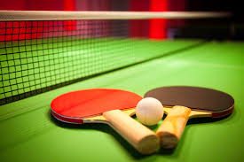

Stolný tenis alebo hovorovo Ping pong patrà medzi najrýchlejšie športové hry na svete, kotrý
uÄà maÅ¥ rýchly odhad hernej situácie a jej okamžité rieÅ¡enie najvhodnejÅ¡Ãm herným spôsobom.
ZaÄiatkom stolného tenisu bol tenis, ktorý sa jeho nadÅ¡enci snažili poÄas zimných mesiacov preniesÅ¥ do sálového prostredia teda na stôl.
Od roku 1909 sa stolný tenis zaÄal Å¡ÃriÅ¥ z Anglicka do Európy.
Z hľadiska vývoja techniky stolný tenis rozdeľujeme na:
- obdobie drevenej rakety => 1884 â 1926
- obdobie gumenej rakety => 1927 â 1951
- obdobie Å¡pongiovej rakety => 1952 â 1959
- obdobie sendviÄovej rakety => 1960 â 1969
- obdobie úÄinných druhov rakiet => (od roku 1970 až podnes)
PrincÃp hry
Stolný tenis je druh Å¡portu, pri ktorom je snahou hráÄa zahraÅ¥ loptiÄku ponad, prÃpadne popri sieÅ¥ke na Å¡peciálnom stole tak,
aby jej vrátenie spôsobovalo Å¥ažkosti súperovi, prÃpadne aby ju nemohol vrátiÅ¥.Podáva sa s loptiÄkou voľne ležiacou na dlani, ktorá musà byÅ¥ otvorená.
LoptiÄka musà byÅ¥ vyhodená z ruky do výšky. Musà sa najskôr dotknúť plochy rakety podávajúceho a potom prijÃmajúceho.
Ak sa loptiÄka dotkne sieÅ¥ky a preskoÄà na stranu prijÃmajúceho, podanie sa opakuje. PovinnosÅ¥ou hráÄa je podávaÅ¥ tak, aby mohla byÅ¥ posúdená jeho správnosÅ¥.
Podanie sa menà po dvoch zahraných loptiÄkách.
Miesta kde sa dá hrať v Košiciach
Haly v Košiciach
| Názov haly |
Miesto |
| Športové centrum Cassosport |
Alejová 1632/1 |
| Stolnotenisový klub LokomotÃva |
Äermeľská cesta 1452 |
| Tenis komplex |
Wuppertálska |
| Tenisový klub DRANaM |
Vysokoškolská 39 |
| Cassovia Badminton Spot |
Opatovská cesta 1742 |
| Å opa Gallery malba |
Mäsiarska 422 |
| KSC JUŽAN |
Smetanova 522 |
| SpoloÄensko â relaxaÄné centrum |
Ul. Milosrdenstva 462/4 |
| Výstavný a všešportový areál |
Pri prachárni 11 |
| RCM |
Strojárenská 1061/3 |
| SPACE::LAB |
Bulharská 557/4 |